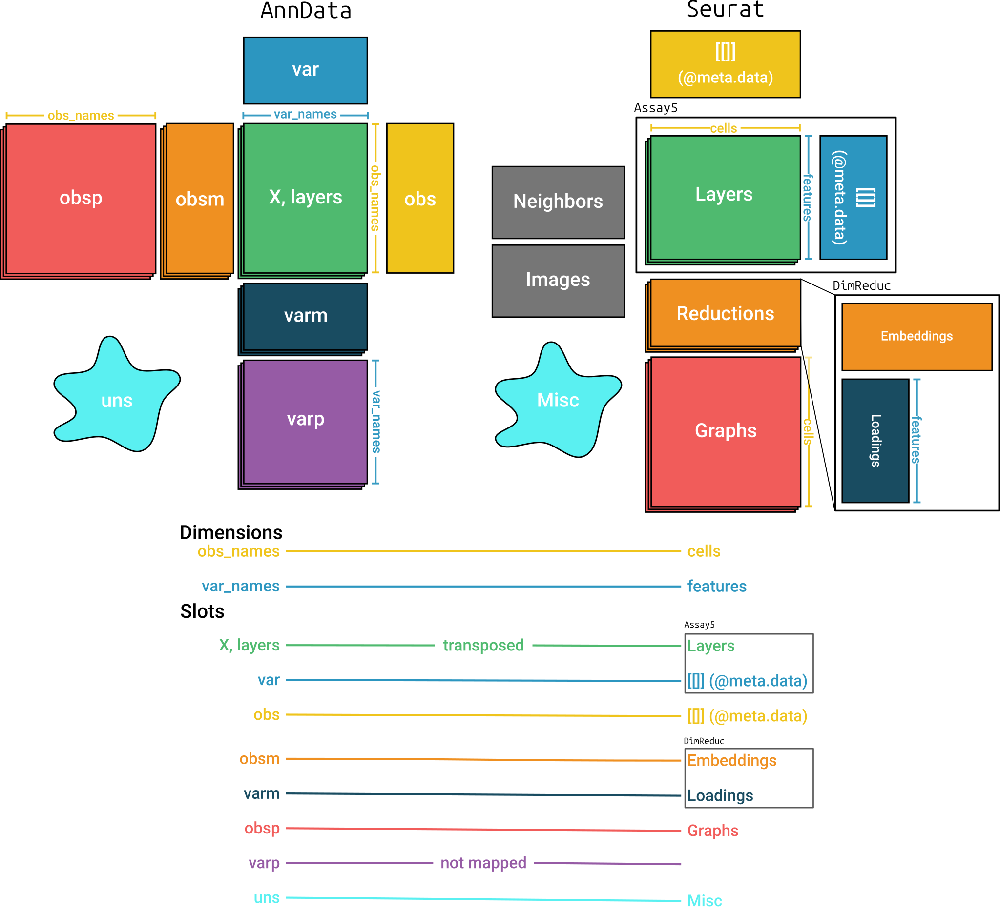

Introduction
This vignette demonstrates how to read and write Seurat
objects using the anndataR
package, leveraging the interoperability between Seurat and
the AnnData format.
Seurat is a
widely used toolkit for single-cell analysis in R. anndataR
enables conversion between Seurat objects and
AnnData objects, allowing you to leverage the strengths of
both the scverse and Seurat ecosystems.
Prerequisites
This vignette requires the Seurat package in addition to anndataR. You can install them using the following code:
install.packages("Seurat")Reading H5AD files to a Seurat Object
Using an example .h5ad file included in the package, we
will demonstrate how to read an .h5ad file and convert it
to a Seurat object.
library(anndataR)
library(Seurat)
#> Loading required package: SeuratObject
#> Loading required package: sp
#> 'SeuratObject' was built under R 4.5.0 but the current version is
#> 4.5.3; it is recomended that you reinstall 'SeuratObject' as the ABI
#> for R may have changed
#>
#> Attaching package: 'SeuratObject'
#> The following objects are masked from 'package:base':
#>
#> intersect, t
h5ad_file <- system.file("extdata", "example.h5ad", package = "anndataR")Read the .h5ad file as a Seurat object:
seurat_obj <- read_h5ad(h5ad_file, as = "Seurat")
seurat_obj
#> An object of class Seurat
#> 100 features across 50 samples within 1 assay
#> Active assay: RNA (100 features, 0 variable features)
#> 5 layers present: counts, csc_counts, dense_X, dense_counts, X
#> 2 dimensional reductions calculated: X_pca, X_umapThis is equivalent to reading in the .h5ad file as an
AnnData and explicitly converting:
adata <- read_h5ad(h5ad_file)
seurat_obj <- adata$as_Seurat()
seurat_obj
#> An object of class Seurat
#> 100 features across 50 samples within 1 assay
#> Active assay: RNA (100 features, 0 variable features)
#> 5 layers present: counts, csc_counts, dense_X, dense_counts, X
#> 2 dimensional reductions calculated: X_pca, X_umapMapping between AnnData and Seurat
Figure @ref(fig:mapping) shows the structures of the
AnnData and Seurat objects and how anndataR
maps between them. It is important to note that matrices in the two
objects are transposed relative to each other.

Mapping between AnnData and Seurat objects
By default, all items in most slots are converted using the same
names. An exception is the varp slot which doesn’t have a
corresponding slot in Seurat. Items in the
varm slot are only converted when they are specified in a
mapping argument. The Neighbors and Images
slots are not mapped when converting from Seurat. See
?as_Seurat for more details on the default mapping.
Customizing the conversion
You can customize the conversion process by providing specific
mappings for each slot in the Seurat object.
Each of the mapping arguments can be provided with one of the following:
-
TRUE: all items in the slot will be copied using the default mapping -
FALSE: the slot will not be copied - A (named) character vector: the names are the names of the slot in
the
Seuratobject, the values are the names of the slot in theAnnDataobject.
See ?as_Seurat for more details on how to customize the
conversion process. For instance:
seurat_obj <- adata$as_Seurat(
layers_mapping = c("counts", "dense_counts"),
object_metadata_mapping = c(metadata1 = "Int", metadata2 = "Float"),
assay_metadata_mapping = FALSE,
reduction_mapping = list(
pca = c(key = "PC_", embeddings = "X_pca", loadings = "PCs"),
umap = c(key = "UMAP_", embeddings = "X_umap")
),
graph_mapping = TRUE,
misc_mapping = c(misc1 = "Bool", misc2 = "IntScalar")
)
seurat_obj
#> An object of class Seurat
#> 100 features across 50 samples within 1 assay
#> Active assay: RNA (100 features, 0 variable features)
#> 3 layers present: counts, dense_counts, X
#> 2 dimensional reductions calculated: pca, umapThe mapping arguments can also be passed directly to
read_h5ad().
Writing a Seurat object to a H5AD file
The reverse conversion is also possible, allowing you to convert the
Seurat object back to an AnnData object, or to
just write out the Seurat object as an .h5ad
file.
write_h5ad(seurat_obj, tempfile(fileext = ".h5ad"))This is equivalent to converting the Seurat object to an
AnnData object and then writing it out:
adata <- as_AnnData(seurat_obj)
adata$write_h5ad(tempfile(fileext = ".h5ad"))You can again customize the conversion process by providing specific
mappings for each slot in the AnnData object. For more
details, see ?as_AnnData.
Here’s an example:
adata <- as_AnnData(
seurat_obj,
assay_name = "RNA",
x_mapping = "counts",
layers_mapping = c("dense_counts"),
obs_mapping = c(RNA_count = "nCount_RNA", metadata1 = "metadata1"),
var_mapping = FALSE,
obsm_mapping = list(X_pca = "pca", X_umap = "umap"),
obsp_mapping = TRUE,
uns_mapping = c("misc1", "misc2")
)
adata
#> InMemoryAnnData object with n_obs × n_vars = 50 × 100
#> obs: 'RNA_count', 'metadata1'
#> uns: 'misc1', 'misc2'
#> obsm: 'X_pca', 'X_umap'
#> layers: 'dense_counts'
#> obsp: 'connectivities', 'distances'The mapping arguments can also be passed directly to
write_h5ad().
Session info
sessionInfo()
#> R version 4.5.3 (2026-03-11)
#> Platform: x86_64-pc-linux-gnu
#> Running under: Ubuntu 24.04.4 LTS
#>
#> Matrix products: default
#> BLAS: /usr/lib/x86_64-linux-gnu/openblas-pthread/libblas.so.3
#> LAPACK: /usr/lib/x86_64-linux-gnu/openblas-pthread/libopenblasp-r0.3.26.so; LAPACK version 3.12.0
#>
#> locale:
#> [1] LC_CTYPE=C.UTF-8 LC_NUMERIC=C LC_TIME=C.UTF-8
#> [4] LC_COLLATE=C.UTF-8 LC_MONETARY=C.UTF-8 LC_MESSAGES=C.UTF-8
#> [7] LC_PAPER=C.UTF-8 LC_NAME=C LC_ADDRESS=C
#> [10] LC_TELEPHONE=C LC_MEASUREMENT=C.UTF-8 LC_IDENTIFICATION=C
#>
#> time zone: UTC
#> tzcode source: system (glibc)
#>
#> attached base packages:
#> [1] stats graphics grDevices utils datasets methods base
#>
#> other attached packages:
#> [1] Seurat_5.4.0 SeuratObject_5.3.0 sp_2.2-1 anndataR_1.1.2
#> [5] BiocStyle_2.38.0
#>
#> loaded via a namespace (and not attached):
#> [1] deldir_2.0-4 pbapply_1.7-4 gridExtra_2.3
#> [4] rlang_1.1.7 magrittr_2.0.4 RcppAnnoy_0.0.23
#> [7] otel_0.2.0 spatstat.geom_3.7-3 matrixStats_1.5.0
#> [10] ggridges_0.5.7 compiler_4.5.3 reshape2_1.4.5
#> [13] png_0.1-9 systemfonts_1.3.2 vctrs_0.7.2
#> [16] stringr_1.6.0 pkgconfig_2.0.3 fastmap_1.2.0
#> [19] promises_1.5.0 rmarkdown_2.31 ragg_1.5.2
#> [22] purrr_1.2.1 xfun_0.57 cachem_1.1.0
#> [25] jsonlite_2.0.0 goftest_1.2-3 later_1.4.8
#> [28] rhdf5filters_1.22.0 Rhdf5lib_1.32.0 spatstat.utils_3.2-2
#> [31] irlba_2.3.7 parallel_4.5.3 cluster_2.1.8.2
#> [34] R6_2.6.1 ica_1.0-3 spatstat.data_3.1-9
#> [37] stringi_1.8.7 bslib_0.10.0 RColorBrewer_1.1-3
#> [40] reticulate_1.45.0 spatstat.univar_3.1-7 parallelly_1.46.1
#> [43] scattermore_1.2 lmtest_0.9-40 jquerylib_0.1.4
#> [46] Rcpp_1.1.1 bookdown_0.46 knitr_1.51
#> [49] tensor_1.5.1 future.apply_1.20.2 zoo_1.8-15
#> [52] sctransform_0.4.3 httpuv_1.6.17 Matrix_1.7-4
#> [55] splines_4.5.3 igraph_2.2.2 tidyselect_1.2.1
#> [58] abind_1.4-8 yaml_2.3.12 spatstat.random_3.4-5
#> [61] spatstat.explore_3.8-0 codetools_0.2-20 miniUI_0.1.2
#> [64] listenv_0.10.1 plyr_1.8.9 lattice_0.22-9
#> [67] tibble_3.3.1 shiny_1.13.0 S7_0.2.1
#> [70] ROCR_1.0-12 evaluate_1.0.5 Rtsne_0.17
#> [73] future_1.70.0 fastDummies_1.7.5 desc_1.4.3
#> [76] survival_3.8-6 polyclip_1.10-7 fitdistrplus_1.2-6
#> [79] pillar_1.11.1 BiocManager_1.30.27 KernSmooth_2.23-26
#> [82] plotly_4.12.0 generics_0.1.4 RcppHNSW_0.6.0
#> [85] ggplot2_4.0.2 scales_1.4.0 globals_0.19.1
#> [88] xtable_1.8-8 glue_1.8.0 lazyeval_0.2.2
#> [91] tools_4.5.3 data.table_1.18.2.1 RSpectra_0.16-2
#> [94] RANN_2.6.2 fs_2.0.1 dotCall64_1.2
#> [97] rhdf5_2.54.1 cowplot_1.2.0 grid_4.5.3
#> [100] tidyr_1.3.2 nlme_3.1-168 patchwork_1.3.2
#> [103] cli_3.6.5 spatstat.sparse_3.1-0 textshaping_1.0.5
#> [106] spam_2.11-3 viridisLite_0.4.3 dplyr_1.2.0
#> [109] uwot_0.2.4 gtable_0.3.6 sass_0.4.10
#> [112] digest_0.6.39 progressr_0.18.0 ggrepel_0.9.8
#> [115] htmlwidgets_1.6.4 farver_2.1.2 htmltools_0.5.9
#> [118] pkgdown_2.2.0 lifecycle_1.0.5 httr_1.4.8
#> [121] mime_0.13 MASS_7.3-65